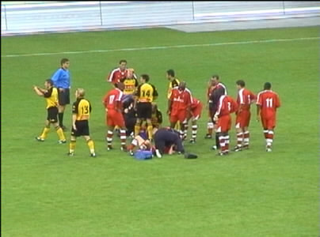
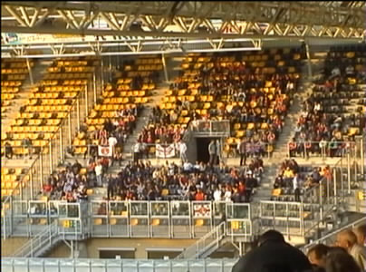
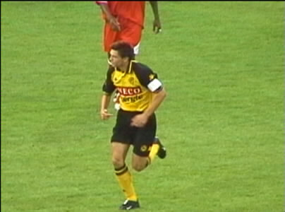
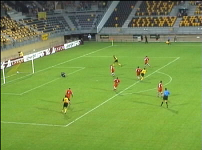
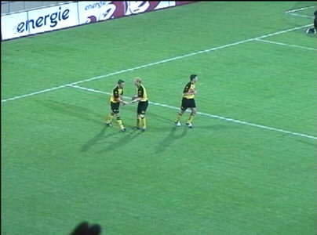
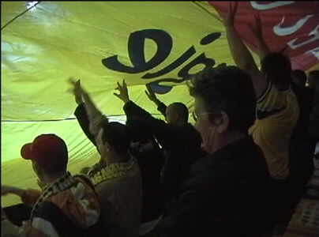
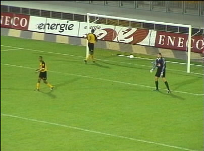
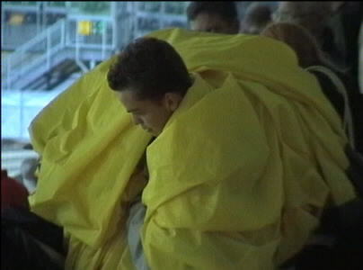

|
Roda JC - Charlton Athletic (2-1) 10 augustus 2001 |

Enkele gewonden, o.a. Sven Vandenbrouck.

Er waren ongeveer 200 Charlton Athletic-fans.

Van Dessel droeg de aanvoerdersband!

Na een lange rush scoort Tom Soetaers op voortreffelijke
wijze het openingsdoelpunt.

Soetaers maakt ook het tweede doelpunt.

Het shirt wordt weer over het publiek getrokken.

Een fout in de defensie wordt afgestraft. In de 92e minuut
wordt het 2-1.

Ruud heeft de wasmachine vanavond vol!